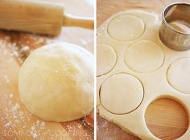
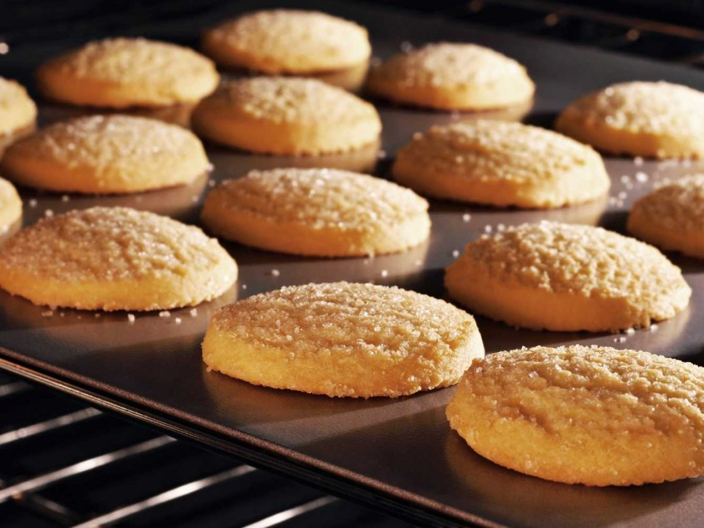
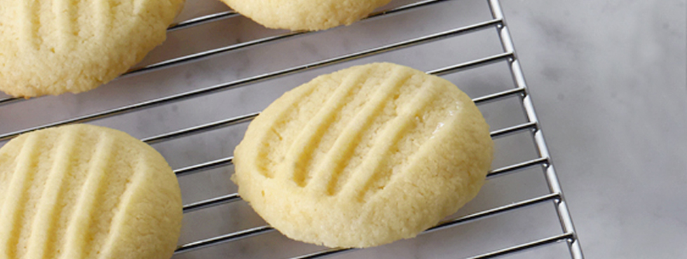

Shortbread Cookies
Serves: 36
Ingredients
- 1 cup unsalted butter at room temperature
- ½ cup plus 2 Tbsp icing sugar
- ¼ cup cornstarch or rice flour
- 1 ½ cup all purpose flour
- ½ tsp salt
- 1 tsp vanilla extract
Directions
1. Preheat oven to 350 °F.
2. Beat butter until light and fluffy. Sift in icing sugar and beat again until fluffy, scraping down sides of the bowl often.
3. Sift in cornstarch or rice flour and blend in.
4. Sift in all purpose flour and salt and mix until dough comes together (it will be soft). Stir in vanilla
5. Spoon large teaspoonfuls of cookie dough (or use a small ice cream scoop) onto an un-greased cookie sheet, leaving 2 inches between cookies.
6. Bake for 18 to 20 minutes, until bottoms brown lightly. Remove from cookie sheet to cool.
Credits: Adapted from "Shortbread Cookies," - Food Network, Courtesy of Anna Olson